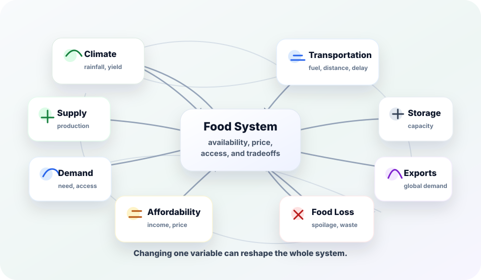

Mathematics Helps Us
Model change, identify patterns, test assumptions, compare possibilities, estimate outcomes, critique predictions, and reveal constraints.
Algebra 2 Cumulative Semester Final Project
“All models are wrong, but some are useful.” George Box
Use Algebra 2 to investigate how real food systems evolve under pressure: price, transportation, labor, climate, storage, exports, infrastructure, supply, demand, and waste.

Project Philosophy
This project is about increasingly thoughtful mathematical reasoning. Perfect prediction is not the goal. Revision, critique, and clearer assumptions are evidence that your understanding is becoming more sophisticated.
Model change, identify patterns, test assumptions, compare possibilities, estimate outcomes, critique predictions, and reveal constraints.
What assumptions are we making? What variables matter most? Where does the model stop making sense? What tradeoffs appear?
Changing a model is not failure. It shows you are testing the relationship between graph, algebra, context, and reality.
Final Deliverables
Choose the format that best communicates your investigation. The goal is mathematical clarity, not a polished slideshow.
Your living workspace: rough work, Desmos screenshots, handwritten calculations, system maps, AI interactions, and revised reasoning.
Graph annotations, recursive calculations, polynomial long division, sketches, tables, recalculations, and revised models.
3–5 minute mathematical conversations. These should show thinking in progress, not memorized scripts or production polish.
Flexible Communication Format
Possible formats include slides, filmed discussions, workbook walkthroughs, digital whiteboard explanations, screencasts, annotated journals, documentary-style explanations, or hybrid combinations.
The mathematics must remain central: models, graph analysis, comparisons, assumptions, revisions, limitations, and final claims.
Workbook walkthroughs are encouraged: explain crossed-out assumptions, revised graphs, recalculations, and changing interpretations directly from your journal.
Clarity over production value: do not prioritize cinematic editing, effects, or overproduction. Prioritize reasoning and explanation.
Everyone contributes: each student must visibly speak mathematical reasoning, interpretation, comparison, critique, or explanation.
Collaboration Structure
The group functions as a collaborative mathematical inquiry team. Do not divide topics by student or assign ownership of units. Every student engages with sequences, exponentials, polynomials, graph interpretation, statistical reasoning, critique, revision, and synthesis.
Discuss, graph, revise, compare, critique, and synthesize together. Understanding should emerge collaboratively.
Each student submits smaller artifacts: annotations, recalculations, comparisons, graph interpretations, r/R² critiques, revised assumptions, and limitation reflections.
This is not one student doing sequences, another doing exponentials, and another doing polynomials. Everyone must speak mathematics across the project.
Five-Class Arc
Choose One Scenario
Do not begin by looking for a formula. Begin by noticing quantities, relationships, and questions worth investigating.
Scenario A — United States
Everyday food prices tell a story about affordability, labor, transportation, and changing consumer choices.
Possible focus: How have changing costs reshaped the affordability of everyday food products over time?
Scenario B — Global
A disruption in one region can reshape wheat prices, exports, transportation, and recovery patterns across the world.
Possible focus: How do global disruptions reshape food systems over time?
Scenario C — Sub-Saharan Africa
Food loss can accumulate across storage, refrigeration, transport, and infrastructure gaps before it reaches people.
Possible focus: How much food is lost before it reaches people?
Scenario D — Colombia
Coffee production depends on rainfall, yield, storage, exports, and thresholds that can shift over time.
Possible focus: How do environmental and economic changes reshape coffee production over time?
| Too Broad | Better |
|---|---|
| How inflation affects food | How Subway sandwich prices changed over time |
| Climate and coffee | Rainfall vs coffee yield in one region |
| Food insecurity | Food spoilage during transportation stages |
| War and food systems | Wheat price recovery after export disruption |
| Food waste | How much food remains after repeated storage and transport losses |
| Coffee production | How changing yield affects storage and export needs |
Class Roadmap
What relationships are we beginning to notice?
Focus: Observation, variables, systems thinking, uncertainty, early assumptions.
Goals: Choose a scenario, narrow focus, identify variables and changing quantities, create a system map, identify one measurable relationship.
Required work: Early notes, variable lists, system sketches, possible relationships, rough observations, sketch-first predictions.
Vlog 1: Observation and uncertainty. Discuss patterns, unclear ideas, assumptions, and important variables.
How is the system changing over time?
Focus: Repeated change, sequences, series, prediction, recalculation.
Required comparison: discrete vs continuous, sequence vs function, arithmetic vs geometric, recursive vs explicit, finite vs infinite series.
Required explanation: What does each term represent, what does the cumulative sum mean, and what evidence supports your model type?
Model variants: Compare short-term and long-term predictions, such as years 0–5, 0–10, and 0–20.
Vlog 2: Explain why your model makes sense, compare it to a continuous model, and identify where it begins to fail.
When does repeated change become accelerated or compounding?
Focus: Exponentials, logarithms, thresholds, model breakdown.
Required comparison: exponential vs linear, geometric sequence vs exponential function, discrete vs continuous variables.
Required explanation: What does the base or growth factor mean, why are logarithms needed, and what threshold are you solving for?
Model variants: Compare different rates, such as 3%, 5%, and 8%, and explain how thresholds change.
Vlog 3: Compare your Class 2 geometric model with your exponential model and explain where exponential behavior stops being realistic.
How do physical and economic constraints reshape the system?
Focus: Polynomials, storage systems, cost, tradeoffs, constraints.
Required comparison: polynomial vs simpler linear or exponential model; factored form vs standard form.
Required analysis: degree, even/odd behavior, leading coefficient, end behavior, intercepts, multiplicity, extrema, and realistic domain.
Model variants: Compare different cutouts, dimensions, domains, and constraints.
Vlog 4: Explain what the polynomial reveals that a simpler model would miss, and which graph regions are physically unrealistic.
What story does our mathematics tell?
Focus: Synthesis, revision, interpretation, communication, limitations.
Required work: Connect sequences, exponentials, and polynomials into one evidence-based explanation.
Final claim: Make one mathematical claim that uses evidence, acknowledges assumptions, and recognizes limitations.
Vlog 5: Discuss how your understanding evolved and what limitations remained.
Required Mathematical Comparisons
Strong Algebra 2 thinking means distinguishing nearby ideas, choosing the right representation, and explaining what the mathematics reveals and misses.
Investigation Journal
The journal should show rough work, screenshots, annotations, recalculations, revised models, system maps, AI interactions, and evolving reasoning.
Variable | Units | Why does it matter?
Predict one relationship before graphing.
Graph observation | Algebraic meaning | Real-world meaning
Mathematical lens | What did it reveal? | Where did it fail?
Evidence Checklist
Use this as a progress tracker. Check items only when your journal, artifacts, or final communication show the math, the context, and the interpretation.
How is the system changing over time?
When does repeated change accelerate, decay, or cross a threshold?
How do capacity, cost, and physical constraints reshape the system?
What story does your mathematics tell, and how did your thinking change?
Why this model? State why the model type fits the pattern or constraint.
What does it mean? Translate variables, parameters, graph features, and solutions into the food system.
How do you know? Use calculations, graph evidence, units, and comparisons to support claims.
What changed? Compare related model versions and explain how assumptions reshape predictions.
What are the limits? Name assumptions, unrealistic regions, hidden variables, and tradeoffs.
Every graph has context, units, annotations, and a realistic domain.
Every model includes a written explanation of assumptions and limitations.
Every lens includes at least one comparison between related models or assumptions.
Your final format makes mathematical evidence visible, not merely narrated.
Every group member can explain the mathematics without reading a script.
CNG SAIL Level L5 — Co-Create
Use AI to challenge assumptions, critique models, identify missing variables, compare interpretations, test assumptions, estimate or explain r and R², organize ideas, and revise explanations.
Do not submit reasoning you do not understand, ask AI to complete the project, hide meaningful AI use, or replace your own mathematical voice.
Bring AI into moments of confusion, revision, recalculation, critique, and interpretation. Save meaningful interactions in your journal.
AI use: We asked ChatGPT to critique our assumptions about constant growth. We rejected one suggestion, revised our rate assumption, and recalculated the threshold.
Lightweight Model Fit Check
This is a credibility and critique tool, not a full statistics unit. The purpose is interpretation, not manual calculation.
Copy and paste your two-variable data or describe your scatterplot. Ask AI: What does r suggest about direction and strength? What does R² suggest about model fit? What limitations should we be careful about? What hidden variables might affect this relationship? Does this imply causation? Why or why not?
Then critique: What did AI help us understand? What still needs verification? What limitations remain? How does this affect the credibility of our claim?
Resource Hub
Research supports the mathematics. Research is not the project.
Rubrics
I can compare model types, justify choices, explain graph ↔ algebra ↔ context connections, revise assumptions, interpret r/R² as evidence, and show my own mathematical thinking inside the group investigation.
Scored from 1–4. The strongest work prioritizes reasoning, comparison, critique, revision, model choice justification, r/R² interpretation, and visible mathematical thinking from every student. Format polish is not the point.
| 1 — Beginning | 2 — Developing | 3 — Proficient | 4 — Advanced |
|---|---|---|---|
| Minimal shared understanding; incomplete reasoning; weak evidence; few comparisons; explanations are missing, copied, unclear, or disconnected from context. | Partial understanding; explanations are procedural or inconsistent; some graph-algebra-context links; limited model comparison, revision, r/R² interpretation, or critique. | Accurate reasoning with clear model choice justification, comparisons, graph-algebra-context connections, revision, critique, individual evidence snapshots, and r/R² interpretation when relevant. | Sophisticated collaborative inquiry; strong comparisons across model types and assumptions; precise explanations, revisions, limitations, r/R² critique, synthesis, and visible thinking from all students. |
Downloads
These PDFs include generous workspace and are designed for printing or digital annotation.